- Example 31.3 The students would like to limit their waiting time to an average of 2 minutes and no more than 5 minutes in 90% of the cases. Is it feasible? If yes, then how many terminals are required?
Let us analyze the system with m = 6,7,... terminals while keeping the same arrival and service rates of λ = 0.167 and µ = 0.05, respectively.
With m = 6 terminals, we have
- Traffic intensity ρ = 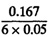 = 0.556
- Probability of all terminals being idle = p0 = 0.0346
- Probability of all terminals being busy =
 = 0.15
= 0.15
- Average waiting time = E[w] = 1.1 minutes
The 90-percentile of waiting time is
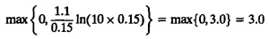
Thus, with just one more terminal we will be able to satisfy the students’ demands.
One of the important decisions to be made when there is more than one identical server is whether to keep separate queues for each server or to keep just one queue for all servers. For Poisson arrivals and exponential service times, the first option of separate queues can be modeled using m M/M/1 queues, each with an arrival rate of λ/m. The second option of one queue can be modeled using an M/M/m queue with an arrival rate of λ. It is easy to show that the single-queue alternative is better. We illustrate this with an example.
- Example 31.4 Consider what would have happened if the five terminals in Example 31.2 were located in five different locations on the campus, thereby needing a separate queue for each.
In this case, the system can be modeled as five separate M/M/1 queues. The arrival rate for each terminal would be one-fifth of the total arrival rate. Using m = 1, λ = 0.167/5 = 0.0333, and µ = 0.05, we have
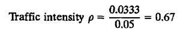
The mean time spent in the terminal room is
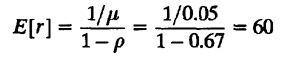
The variance of the time spent in the terminal room is
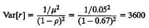
Compare this to the mean of 24 minutes and a variance of 479 in Example 31.2 when all five terminals were located in one facility. It is clear that the single-queue alternative is better. In this example, we have ignored the difference in the walking time to the terminal room(s) from the dormitory. It is quite possible that having several terminal rooms distributed across the campus may reduce the walking time considerably and may become the preferred solution.
In general, if all jobs are identical, it is better to have just one queue than to have multiple queues. Of course, if some students need very short terminal sessions and others need very long sessions, this recommendation would not apply.
A special case of an M/M/m queue is the M/M/∞ queue with infinite servers. In such a queue, the jobs never have to wait. The response time is equal to the service time. The mean response time is equal to the mean service time regardless of the arrival rate. Such service centers are therefore also called delay centers. A delay center is used to represent dedicated resources, such as terminals in timesharing systems. Properties of such queues can be easily derived from those for M/M/m queues, Also results presented for M/G/∞ queues in Box 31.8 apply to delay centers as well.
31.4 M/M/m/B OUEUE WITH FINITE BUFFERS
An M/M/m/B queue is similar to the M/M/m queue except that the number of buffers B is finite. After B buffers are full, all arrivals are lost. We assume that B is greater than or equal to m; otherwise, some servers will never be able to operate due to a lack of buffers and the system will effectively operate as an M/M/B/B queue.
FIGURE 31.5 State transition diagram for an M/M/m/B queue.
The state transition diagram for an M/M/m/B queue is shown in Figure 31.5. The system can be modeled as a birth-death process using the following arrival and service rates:
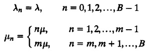
Theorem 31.1 gives us the following expression for the probability of n jobs in the system:
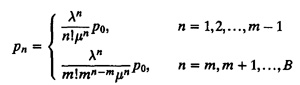
In terms of the traffic intensity ρ = λ/mµ, we have
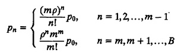
The probability of zero jobs in the system is computed by the relationship
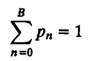
This gives
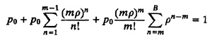
or
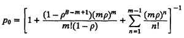
Using the expression for pn, the mean number of jobs in the system E[n] and the mean number of jobs in the queue E[nq] can be computed straightforwardly:
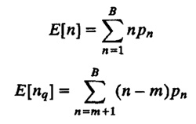
Variance and other statistics on n and nq can be similarly computed.
All arrivals occurring when the system is in the state n = B are lost. The rate of the jobs actually entering the system, called effective arrival rate, is
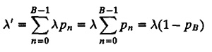
The difference λ – λ’ = λpB represents the packet loss rate.
Since the jobs are not lost after entering the system, Little’s law can be used to determine the mean response time:
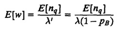
Similarly, the mean waiting time is
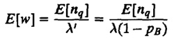
If we observe the system for a long time, T seconds, for instance, the total number of jobs arriving and getting service will be λ’T. Tle total busy time of m servers to service these jobs will be λ’T/µ, and the utilization of each server will be
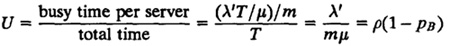
The probability of the full system is given by pB. For a M/M/m/m system, the number of buffers is exactly equal to the number of servers, and the loss probability is
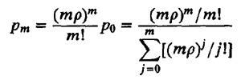
This formula is called Erlang’s loss formula. It was originally derived by Erlang to compute the probability of lost phone calls at a telephone exchange. It turns out that the formula is valid not only for an M/M/m/m queue but also for M/G/m/m queues.
The results for the M/M/m/B queues are summarized in Box 31.3. For the special case of a single server, many of the results can be expressed in closed forms. This special case is summarized in Box 31.4. The following example illustrates the application of these results.
- Example 31.5 Consider the gateway of Example 31.1 again. Let us analyze the gateway assuming it has only two buffers. The arrival rate and the service rate, as before, are 125 pps and 500 pps, respectively.
In this case
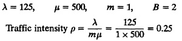
For n = 1, 2,..., B are the pn
p1 = ρp0 = 0.25p0
p2 = ρ2p0 = 0.252 p0 = 0.0625p0
-
Then p0 is determined by summing all probabilities:
p0 + p1 + p2 = 1 = ⇒ p0 + 0.25p0 + 0.0625p0 = 1 = ⇒ p0
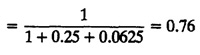
){kind=link}
){kind=link}